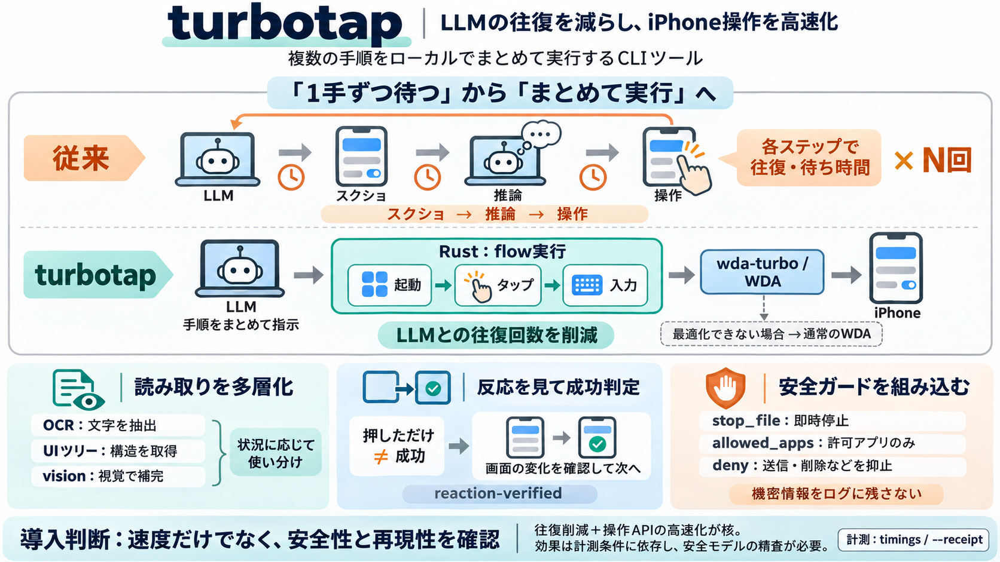

https://raw.githubusercontent.com/Maxteabag/turbotap/main/docs/SETUP.md
\# Complete Setup Guide This guide takes you from zero to driving a physical iPhone headlessly over Wi-Fi from Linux or …

LLM からの指示で iPhone を高速に操作する CLI/フロー実行ツールです（WDA 改修 wda-turbo を活用）。
従来は「スクリーンショット→推論→操作」を 1 ステップずつ繰り返しやすく、待ち時間が積み上がります。turbotap はこの往復コストを、フロー（flow）をまとめて実行することで削減します。
turbotap は iPhone 上で動く WebDriverAgent（WDA）を使い、UI 操作 API と読み取り（OCR/アクセシビリティ）を組み合わせます。改善の核は wda-turbo による WDA 操作の高速化です。
LLM に毎回「次の 1 手」を聞く代わりに、flow として複数手順を 1 つのローカル実行に閉じ込めます。これにより「待つ回数」と「座標決定の往復」が減ります。
iPhone 17（iOS 26.6.2）・家庭内 Wi-Fi での計測結果が提示され、中央値と範囲が示されます。加えて timing 計測（例：--receipt）やウォーム運用（--daemon）で理由も追跡できます。
読み取りは OCR とアクセシビリティツリー（UI）を組み合わせ、状況に応じて手段を切り替えます。これにより、速度だけでなく失敗率低下にも寄与し得ます。
「ラベルを認識して押す」だけでなく、反応（iOS 遷移など）を確認してから次へ進む方式を示します。押下の成功を検証するため、速度と成功率の両方を評価対象にできます。
wda-turbo のパッチが適用できない場合でも、stock WDA に自動フォールバックする方針が読み取れます。最適化と運用継続性（継続して回す）を両立します。
停止ファイルによる即時停止、許可アプリ制限（allowed_apps）、deny パターン、送信/削除などの抑止が明示されています。加えて、パスコード等の機密情報を出力・ログへ残さない方針も書かれています。
turbotap は、LLM が遅くなりがちな往復を減らし、ローカルで flow を回す設計と、WDA 操作の高速化で現実的な改善を狙います。一方で導入の確信には、安全モデルと計測条件（docs/SAFETY.md・docs/benchmarks.md）の精査が必須です。
\# Complete Setup Guide This guide takes you from zero to driving a physical iPhone headlessly over Wi-Fi from Linux or …
I tried mirroring the screen with AirPlay and even streaming a camera, but nothing beat WebDriverAgent. Stock WebDriverA…
It is a Windows rebuild of phone-harness, which relies on macOS iPhone Mirroring. Bonus over the original: WebDriverAgen…
# Getting Started To perform Airtest in iOS, the following steps are required ## 1. iOS-Tagent Create a WebDriver ser…
Let AI use a real iPhone: tap, swipe, type, read the screen. Works over WiFi or from anywhere with Tailscale; set up wit…